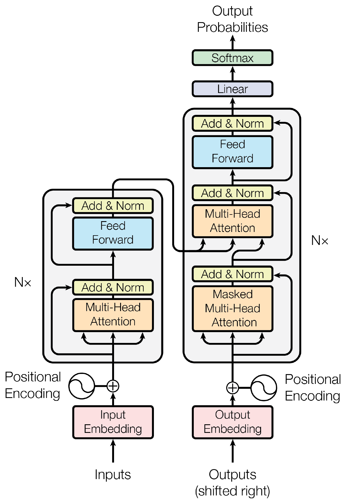
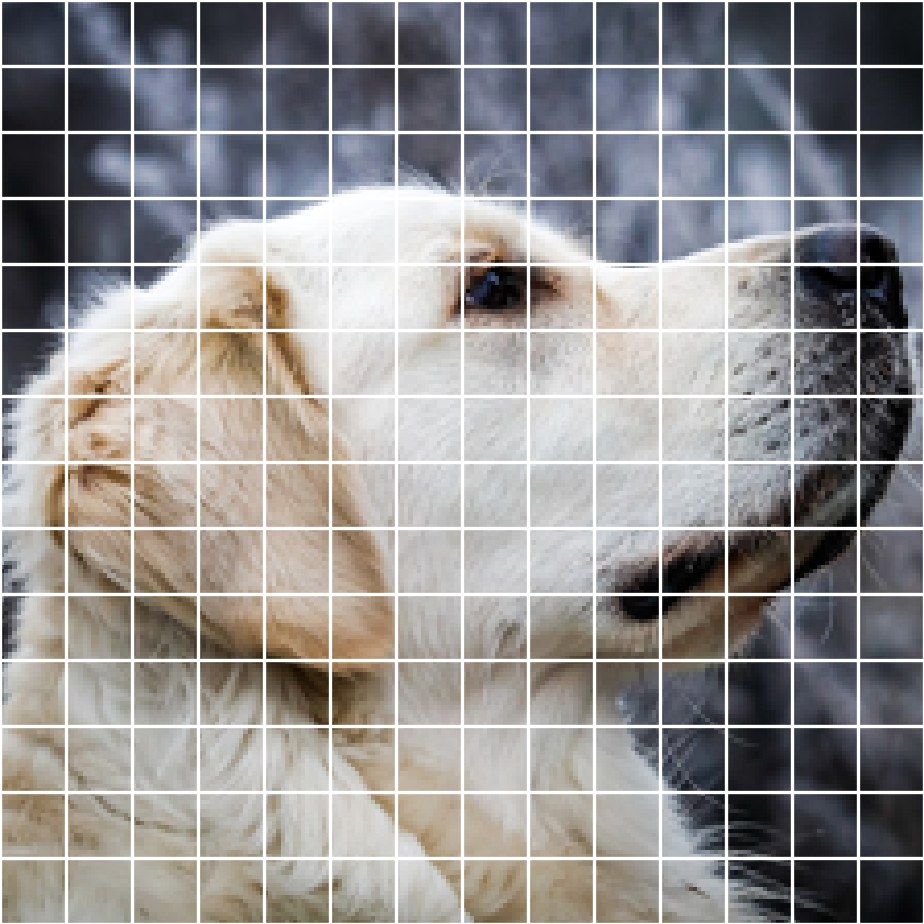
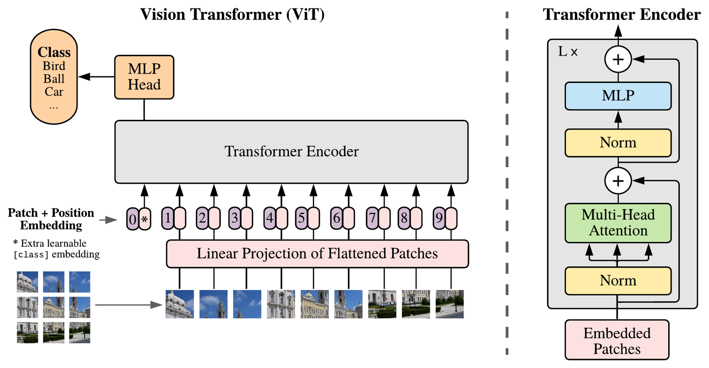
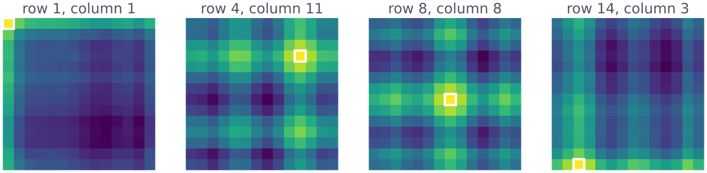
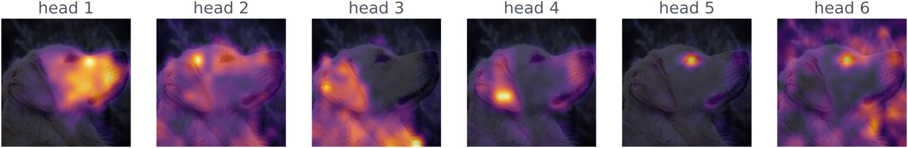
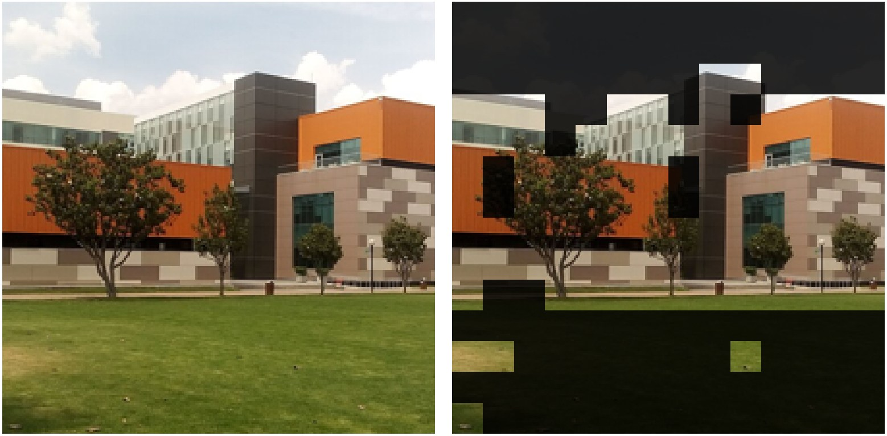

Explain each part of a Transformer block and why it is there.
Trace how a Vision Transformer turns an image into tokens.
Choose between attention, convolution and recurrence for a real problem.
The problem
An RNN squeezes a sentence into one vector
Bahdanau et al. (2014) called this fixed-length vector a bottleneck.
The problem
Let every word look at every other word
2014: Bahdanau et al. let the decoder look back at all the encoder states, not just the last one. This is the first attention.
2017: Vaswani et al. kept the attention and removed the recurrence. The result is the Transformer.
No recurrence means no waiting: all words are processed at the same time, in parallel.
Attention gives every token a direct path to every other token.
Self-attention
Each token asks, describes and offers
Query: what this token is looking for.
Key: what this token contains.
Value: what this token gives if someone picks it.
In a real model, Q, K and V come from three learned matrices. Here they are given.
token
Q
K
V
the
[0, 1]
[0, 1]
[0, 1]
dog
[1, 0]
[2, 0]
[4, 0]
chased
[1, 1]
[0, −1]
[0, 2]
it
[2, 0]
[1, 1]
[1, 1]
Self-attention
What does "it" look at?
Self-attention
All tokens at once is one matrix product
\[ \mathrm{Attention}(Q, K, V) = \mathrm{softmax}\!\left(\frac{QK^\top}{\sqrt{d_k}}\right) V \]
\(QK^\top\) holds every score at once: one row per token, one column per token.
Dividing by \(\sqrt{d_k}\) keeps the scores small, so the softmax does not put all the weight on one token.
Each row of weights sums to 1, then mixes the values.
Self-attention
Longer vectors, bigger scores, a stuck softmax
One query against 8 keys with random numbers. Try dk = 512 without dividing, then switch the division on.
The learning signal is the largest gradient of the softmax: near 0%, the model can barely learn.
Checkpoint
The vectors are large (dk = 512) and you forget to divide by √dk. What happens to the attention weights?
B. A dot product of two 512-dimensional vectors can be large, and the softmax of large differences is close to 0 or 1, so the gradients almost vanish.
A has it backwards: equal weights come from small scores, not large ones. C confuses the scaling with an optimization; it changes the values, not the speed.
Activity · 20 min
Compute attention by hand
Use the Q, K, V table. Compute the four scores for "dog".
Ask yourselves: which word does "dog" look at most, and why?
The Transformer block
The Transformer block
Attention alone does not know word order
"The dog chased it" and "it chased the dog" mean the same thing to the model.
Without help, attention sees a set of tokens, not a sequence: shuffle the words and you get the same scores, only in a different order.
The fix: add a positional encoding to each token before the first block.
Meaning comes from attention; order comes from the position vector.
The Transformer block
One block, repeated N times

Figure from Vaswani et al. (2017).
Multi-head attention: 8 heads in parallel, each looking for something different.
Add & Norm: a residual connection plus layer normalization keep deep stacks trainable.
Feed forward: a small MLP applied to each token on its own.
Result: 28.4 BLEU on English–German, after 3.5 days on 8 GPUs.
The Transformer block
Encoders read both ways, decoders only look back
Encoder (BERT)
Decoder (GPT)
Each token sees
all tokens, left and right
only the tokens before it
How
full attention
a causal mask sets future scores to −∞
Good for
understanding: classify, fill in blanks
generating: write the next word
The original Transformer had both: an encoder for the source sentence and a decoder for the translation.
Checkpoint
You go from a 100-token sentence to a 200-token one. How does the attention matrix of one head change?
C. Every token is compared with every token, so the matrix is n × n: 10,000 entries become 40,000.
A forgets that each new token also adds a column. B confuses the matrix with the learned weights, which do not depend on the length.
Vision Transformer
Vision Transformer
An image becomes a sequence of patches

Photo: Dietmar Rabich, CC BY-SA 4.0.
224 × 224 pixels cut into patches of 16 × 16.
224 / 16 = 14, so 14 × 14 = 196 patches.
Each patch is flattened: 16 × 16 × 3 = 768 numbers, then projected to a vector.
From here on, a patch is just a token.
Vision Transformer
Patches in, the same encoder, a class out

Figure from Dosovitskiy et al. (2021).
A learned CLS token joins the 196 patches: 197 tokens go through the encoder.
Vision Transformer
The model learns where each patch is

Computed with ViT-Base (google/vit-base-patch16-224).
Each map: how similar one patch's position vector is to all 196 (white square = that patch).
Nobody told the model the image is a grid. It learned rows and columns by itself.
Vision Transformer
Few built-in assumptions, so it needs a lot of data
A CNN assumes that nearby pixels go together. A ViT does not: its inductive bias is weak.
Trained on 14M–300M images, ViT matches or beats strong CNNs. On smaller datasets it falls behind.
ViT-Base: 12 layers, 12 heads, 768 dimensions, 86 million parameters.
On our photos it says golden retriever (47%) and, for the campus, palace (60%): ImageNet has no "university" class.
Checkpoint
The same ViT with 16 × 16 patches receives a 384 × 384 image. How many patch tokens does it get, without the CLS token?
A. The image is cut in both directions, so the count is squared: 24 rows × 24 columns.
B counts only one row. C confuses the patch size, which is fixed, with the number of patches, which depends on the image; the position embeddings are interpolated to fit.
What the model looks at
Each head looks at a different part

Attention of the CLS token in the last layer, one map per head: nose, eye, ear, fur.
This model (DINO) was trained with no labels at all.
Computed with DINO ViT-S/16 (Caron et al., 2021).
What the model looks at
Without labels, it finds the building

Patches that hold 60% of the attention in each head, as in Caron et al. (2021). Photo: Moisés Álvarez Domínguez, CC BY-SA 3.0.
Sky and grass fade away. Nobody told the model what a building is.
Activity · 25 min
Build a Transformer block
Part 2: write the attention function and test it on the 4 tokens.
Part 3: cut an image into 16 × 16 patches.
Part 4: assemble one encoder block and check the shapes.